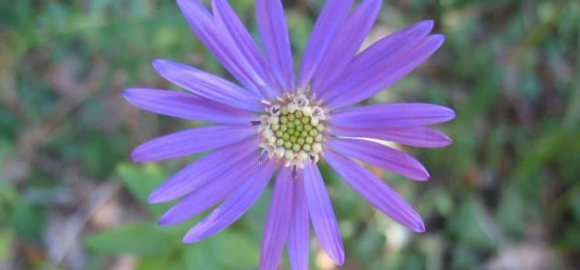

Symphyotrichum georgianum is native to southeastern United States. According to NatureServe.com, a conservation organization, this plant first grew in small clumps, but now there are about 60 populations of this plant due to natural habitat development.
A sun loving plant, Georgia aster was once widespread across southeastern meadows and prairies, but is rare today because of habitat destruction and wildfire suppression. As the natural succession from field to forest progresses in meadows where Georgia aster grows, it can compete well for resources until it begins to be shaded out by woody plants. Georgia aster is endemic to (i.e. occurs only in) a total of about 34 counties in Georgia, Alabama, and the Carolinas. Disjunct populations have been reported in Leon County, Florida and possibly in Louisiana. Georgia aster’s rarity rank in Georgia is S2, meaning it is imperiled because of rarity or because other factors demonstrably make it very vulnerable to extinction. Its legal status in Georgia is threatened, meaning that it is likely to become an endangered species within the foreseeable future. It is currently a candidate for federal legal status. In May 2014, a Candidate Conservation Agreement (CCA) for Georgia aster was signed. This voluntary conservation agreement between the U.S. Fish and Wildlife Service enables nine federal, state, private and public partners to work together to conserve Georgia’s remaining estimated 65 populations. The CCA’s goal is to keep Georgia aster from being added to a list of endangered plants by being proactive in managing our existing populations through prescribed fire, protection from herbicides, canopy thinning, and/or appropriate mowing. Georgia aster is now managed on 10 state lands, at least 6 sites in the Chattahoochee National Forest, 6 sites in the Chattahoochee River National Recreation Area and along several major power lines. Georgia aster’s native habitat is open, sunny areas, where it grows along edges and openings in rocky, upland oak-hickory-pine forests, and rights-of-way. The primary controlling factor for its occurrence seems to be the availability of sunlight.